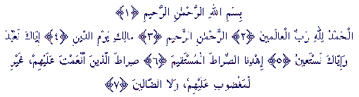

Mekka
7 ajeta


| sura 1 Mekka 7 ajeta |
El-FATIHA * OTVARANJE | |
|
| U ime Allaha, Milostivog, Milosrdnog! | FusNote | ||
| 1. | Hvala Allahu, Gospodaru svjetova *
|
| 2. | Milostivom, Milosrdnom *
|
| 3. | Vladaru Dana sudnjeg! *
|
| 4. | Tebe obožavamo i od Tebe pomoć tražimo. |
| 5. | Uputi nas na put pravi, |
| 6. | Put onih kojima si blagodat darovao, *
|
| 7. | Ne onih na kojima je srdžba, niti zalutalih. *
|
 |
|
| Sura El-Fatiha se naziva “Fatihatul-Kitab”
(Otvaranje Knjige) i “Ummul-Kur’an” (Majka Kur’ana). To je sura koja je
neizostavna i koja cini bitni dio javnog i privatnog klanjanja pripadnika
Islama. Bez ove sure nema zajednickog salata, i nijedan dobar posao se ne uradi
i ne privede kraju, a da se ona ne prouci. Ajeti ove sure se vrlo cesto
ponavljaju, pa se zbog toga ona naziva i “Seb’an minel-mesani” (sedam
ponavljajucih). “I doista, dali smo ti sedam (ajeta) ponavljajucih i Kur’an
velicanstveni.”
(Kur’an, 15:87) Allahov Poslanik a.s. je rekao: “Ko ne prouci suru El-Fatiha pri svom klanjanju, njegovo klanjanje bice nevažece.” (Sahih El-Buhari). |
|